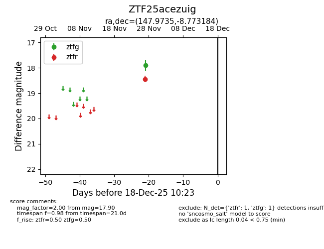
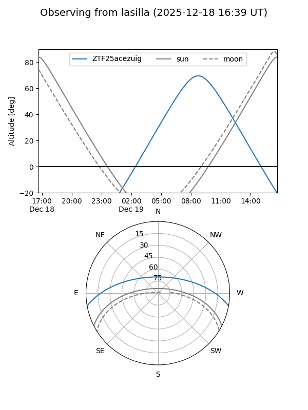
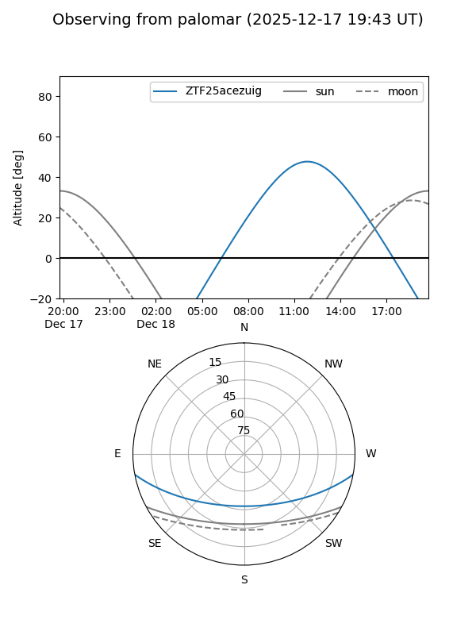

ZTF25acezuig
Target ZTF25acezuig at 2025-12-18 11:17
Aliases and brokers:
FINK: fink-portal.org/ZTF25acezuig
Lasair: lasair-ztf.lsst.ac.uk/objects/ZTF25acezuig
ALeRCE: alerce.online/object/ZTF25acezuig
alt names
ZTF25acezuig (ztf,fink_ztf)
Coordinates:
equatorial (ra, dec) = 147.9735,-8.77318
equatorial (HMS+DMS) = 09:51:53.64,-08:46:23.46
galactic (l, b) = (246.0537,+33.61721)
Photometry
last ztfg=17.90, ztfr=18.44
1 ztfg, 1 ztfr detections
Lightcurve

Visibility


Additional plots